<!DOCTYPE html>
<html lang="fr">
  <head>
    <meta charset="utf-8" />
    <title>Code Is Law</title>
    <link rel="stylesheet" href="https://stackpath.bootstrapcdn.com/bootstrap/4.1.3/css/bootstrap.min.css" integrity="sha384-MCw98/SFnGE8fJT3GXwEOngsV7Zt27NXFoaoApmYm81iuXoPkFOJwJ8ERdknLPMO" crossorigin="anonymous"/>
    <link rel="stylesheet" href="css/twentytwenty.css" type="text/css" media="screen" />
    <link rel="stylesheet" type="text/css" href="css/main.css" />
    <link rel="icon" type="image/png" sizes="16x16" href="image/logo.png"/>
  </head>
  <body>
    <div class="entête">
      <h1 class="glitch">
        <span aria-hidden="true">Code is law</span>
          Code is law
        <span aria-hidden="true">Code is law</span>
      </h1>
      <svg xmlns="http://www.w3.org/2000/svg" width="100" height="100" fill="currentColor" class="bi bi-mouse clignote" id="elem" viewBox="0 0 16 16">
      <path d="M8 3a.5.5 0 0 1 .5.5v2a.5.5 0 0 1-1 0v-2A.5.5 0 0 1 8 3zm4 8a4 4 0 0 1-8 0V5a4 4 0 1 1 8 0v6zM8 0a5 5 0 0 0-5 5v6a5 5 0 0 0 10 0V5a5 5 0 0 0-5-5z"/>
      </svg>
    </div>
    <div class="container">
      <div class="reveal">
        <p class="dissertation">Le Centre Wallonie-Bruxelles/Paris a proposé à deux commissaires français du nom de Carine le Malet & Jean-Luc Soret d’assurer le commissariat d’une exposition disponible du 9 janvier au 28 février 2021. Dans cette exposition nommée <i>Code Is Law </i> les artistes, résidants ou étant d'origine Bruxelloise exposent leurs oeuvres sur le thème du code. Ce titre n’est pas anodin puisqu’il provient d’un article de Lawrence Lessig: un juriste américain, né le 3 Juin 1961 à Rapid City.<br> 
        Lawrence Lessig a une renommée internationale en tant que défenseur de la liberté sur internet et s’oppose à la pratique du droit d’auteur extensif car cela porte atteinte à la création et aux échanges sur internet. En l’an 2000, alors que la technologie vient bouleverser l’existant dans Internet avec sa nouveauté, Lessig va publier un article nommé <i> Code Is Law </i> qui va influencer le monde ainsi que l’exposition <i>Code Is Law.</i><br><br> 


        Ce texte évoque, en introduction, le code et ses enjeux ainsi que la régulation du cyberespace, mais aussi la façon dont cela menace nos libertés et nos droits. Le cyberespace est, d’après le dictionnaire le Petit Robert, l'« ensemble des données numérisées constituant un univers d’information et un milieu de communication, lié à l’interconnexion mondiale des ordinateurs ». Le cyberespace est un mot qui était utilisé dans les années 2000 mais qui n’est plus très juste. Il est, en 2020, remplacé par les mots <a href= "http://dictionnaire.sensagent.leparisien.fr/réseau%20internet/fr-fr/" > « réseau internet » qui est un synonyme plus adéquat. Il est un « réseau mondial associant des ressources de télécommunication et des ordinateurs serveurs et clients, destiné à l'échange de messages électroniques, d'informations multimédias et de fichiers » </a>. Nous parlerons de cyberespace, puisque c’est le terme qu'utilisait Lessig à l’époque. Le cyberespace fonctionne en utilisant un protocole commun qui permet l'acheminement de proche en proche de messages découpés en paquets indépendants. Pour Lessig, cet espace se régule de lui-même avec ses propres manières. Afin de se réguler, le cyberespace utilise le code, ce code définit comment tout va se comporter dans le cyberespace. Le code qui va écrire la façon dont tout se déroule dans cet espace. Le code, dans le cyberespace, est un équivalent des lois de la physique dans le monde réel. Le code contrôle un tas de choses tel que la censure, qui a accès aux informations et qui les partagent. Il a pour autant la particularité de pouvoir se changer au désir des codeurs. Ce changement aura alors un impact sur le cyberespace qui va à son tour subir des modifications. Initialement, le cyberespace prônait la liberté, l’autonomie et l’anonymat mais avec le changement du code cela devient de plus en plus difficile et c’est ce que Lessig veut dénoncer dans cet article.<br>
        <i>Code Is Law </i> s'inspire d’enjeux exposés dans l’article de Lawrence Lessig qui a fait manifeste, relatif entre autres aux ressorts du code, à la neutralité du net et à la question éminemment contemporaine de régulation du cyberespace.
        </p>
      </div>
      <div class="espacement"></div>
      <div class="reveal">
        <h1 id="pbm">A l’aide de ses enjeux nous verrons en quoi l’exposition <i>Code is Law</i> reprend, 10ans plus tard, les idées du texte de Laurence Lessig avec un point de vue contemporain.</h1>
      </div>
      <div class="espacement"></div>
      <div class="reveal">
        <div class="row partie">
          <p class="liste col-lg-4 col-md-4"><a href="#G1">I. Le code réagit grâce aux ...</a></p>
          <ol class="offset-lg-4 col-lg-4 col-md-4 offset-md-4">
            <li class="alphabet"><a href="#1A">...artistes</a></li>
            <li class="alphabet"><a href="#1B">...spectateurs</a></li>
            <li class="alphabet"><a href="#1C">...comportements extérieurs</a></li>
          </ol>
        </div>
        <div class="row partie">
          <p class="liste col-lg-4 col-md-4"><a href="#G2">II. Le rapport de l'identité à l'œuvre</a></p>
          <ol class="offset-lg-4 col-lg-4 col-md-4 offset-md-4">
            <li class="alphabet"><a href="#2A">L'identité qu'on ignore</a></li>
            <li class="alphabet"><a href="#2B">L'identité reconnaissable</a></li>
            <li class="alphabet"><a href="#2C">L'identité modifiable</a></li>
          </ol>
        </div>
        <div class="row partie">
          <p class="liste col-lg-4 col-md-4"><a href="#G3">III. Codes = œuvres</a><p>
          <ol class="offset-lg-4 col-lg-4 col-md-4 offset-md-4">
            <li class="alphabet"><a href="#3A">Code informatique</a></li>
            <li class="alphabet"><a href="#3B">Bases de données</a></li>
            <li class="alphabet"><a href="#3C">Code génétique</a></li>
          </ol>
        </div>
         <div class="row partie">
          <p class="liste col-lg-4 col-md-4"><a href="#conclusion">Conclusion et Ouverture</a></p>
          <ol class="offset-lg-4 col-lg-4 col-md-4 offset-md-4">
          </ol>
        </div>
      </div>
      <div class="espacement"></div>
      <div class="reveal">
        <h1 id="G1">I. Le code réagit grâce aux ...</h1>
      </div>
      <div class="reveal">
        <h2 id="1A">A. ...artistes</h2>
        <p class="dissertation">
         Dans son texte, Lawrence Lessig va nous présenter ce qui constitue le code élémentaire. C’est un ensemble de protocoles appelé TCP/IP, créé par les informaticiens, Bob Kahn et Vinton Cerf, afin de permettre à deux ordinateurs interconnectés d’échanger des données. Les informaticiens contrôlent le code et donc le réseau internet à l’aide de celui-ci, qu’il fait agir. « La question n’est donc pas de savoir qui décidera de la manière dont le cyberespace est régulé : ce seront les codeurs. » Dans l’exposition, les artistes prennent la place des informaticiens et font agir le code comme ils le souhaitent afin de réaliser leurs œuvres. Il y a une régulation vu que l’artiste choisit ce qu’il va faire. Il définit comment son code va se comporter.<br><br> 

          Par exemple Eric Vernhes, connu pour réaliser des « objets temporels » crée deux œuvres exposées dans <i>Code Is Law</i>. La première qu’on retrouve dans l’exposition, <i>Bashô</i>, est inspirée de Matsuo Bashō, qu’on appelait fréquemment uniquement Bashō. C’est un poète japonais du XVIIème siècle né en 1644 à Iga-Ueno et mort le 28 novembre 1694 à Ōsaka. Il est considéré comme l’un des quatre maîtres classiques du haïku japonais avec Buson, Issa, Shiki. Il a réalisé environ 2 000 haïkus. L'œuvre de Eric Vernhes est un dispositif composé d’un écran dans un cadre, en bois ou en acier. Dans l’exposition <i>Code Is Law</i>, le cadre était en acier. Le programme porte son nom car celui-ci prend au hasard une phrase d’un de ses poèmes. 
          Il va alors résumer cette phrase composée de quelques mots. Pour cela il va créer un idéogramme, à l’aide du code qui va être généré pour chaque mot, ainsi qu’un sens de lecture. Cette graphie est ensuite singulière et toujours différente. Elle exprime alors une idée. C’est Eric Vernhes qui a voulu que son code agisse ainsi et nul ne peut le changer. 
        </p>
        <div class="row">
          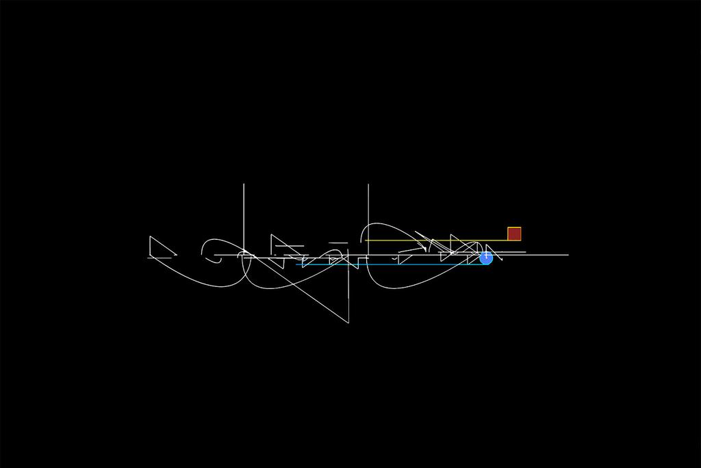
          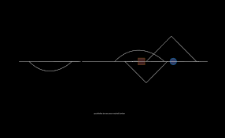
        </div>
      </div>
      <div class="espacement"></div>
      <div class="reveal" onmouseover="musica()" onmouseout="silence()">
        <audio src="audio/machin-machine-son.mp3" id="machin"></audio>
        <p class="dissertation">
          C’est aussi le cas de <i>Machin Machines</i>, œuvre de Natalia de Mello dans l’exposition. Cette artiste née à Lausanne en 1966, et de nationalité belge et portugaise, est enseignante dans l’option pluridisciplinaire Image dans le milieu (IDM) à ARTS2 (Mons), Belgique. Elle possède un diplôme en Dessin et stimulation graphique, ENSAV, La Cambre, Bruxelles et a eu une formations en gravure / photographie argentique / vidéographie / son. Sa pratique englobe le dessin et la gravure, la photographie et la vidéo, la sculpture et les installations. Elle est plasticienne pluridisciplinaire. Dans son travail elle est préoccupée depuis 2000 sur le rapport entre l’espace et la relation à l’autre, comme à la machine. 
          <i>Machin Machine</i> est une œuvre de 5m80 de long qui contient des sculptures qui sont des boîtes disposées sur le mur de dimensions variables. Les boites vont servir d’amplificateur sonore aux enceintes qu’elles renferment. Elles invitent le spectateur à les regarder et à s’en approcher pour mieux entendre les sons. Chaque boite est assemblée comme une portée de musique et permet de réaliser une composition sonore. Celle-ci « interrogent le statut hybride d’œuvres qui tiennent à la fois de la boîte à musique traditionnelle et du bas-relief néo-plasticien d’inspiration numérique ». Elle pointe le doigt sur notre environnement. En effet celui-ci est soumis aux sons des technologies domestiques. Natalia de Mello décore ces boites de photographies provenant des bureaux des ordinateurs. On peut y voir les dossiers qui sont déposés sur les fenêtres de ce bureau . « Le bureau de nos ordinateurs se confond avec l’espace de notre mémoire et ses images-lumière sont le miroir de notre pensée en mouvement. »
          Natalia de Mello conçoit ses « boites monotypes comme une traduction artisanale et métaphorique de ces machines à penser qui procèdent par abstraction, géométrisation et programmation – selon des principes finalement pas si éloignés de ceux d’un Mondrian et d’un Van Doesburg – et je peins ces objets construits avec la même méticulosité et dans le même esprit. » Notre espace bureautique quotidien n’est autre que les écrans d’ordinateurs dont nous sommes absorbés.
        </p>
        <div class="row">
          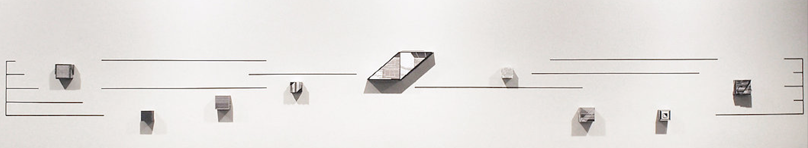
        </div>
      </div>
      <div class="espacement"></div>
      <div class="reveal">
        <p class="dissertation">
        Alex Verhaest est une artiste et cinéaste Bruxelloise qui crée des œuvres combinant technologie et esthétique classique. Son travail, récompensé lors du Ars electronica en 2015, est généralement centré sur un scénario narratif qui fonctionne sous forme de vidéo interactive et non-interactive en mêlant la peinture, le cinéma et les jeux vidéo.<br>  
        Elle va réaliser <i> Sisyphean Games </i>, une série de quatre jeux vidéo inspirés de la première génération de jeux sortis durant les années 1980 et 1990. Les jeux dont ils sont inspirés sont <i>Zaxxon</i>, <i>Doom</i>, <i>DigDug</i> et <i>Mario Bros</i>.<br>
        Cependant, ces jeux ont une spécificité. Ils ne mèneront jamais au niveau suivant puisqu’ils sont conçus pour bloquer le joueur dans un même niveau sans perspective d’évolution. Les interactions du joueur dans ses univers seront au mieux temporaires mais dans le pire des cas ceux-ci n'auront tout simplement aucun impact.
        Cette œuvre montre l’enjeu du code dans le contrôle des individus. L’artiste en tant que codeur va régir son code qui agira sur le jeu en forçant celui qui joue à rester indéfiniment dans ce jeu.<br>
        Comme le dit Lessig dans son texte, le code est un régulateur puisque le code régule le temps que nous allons passer sur un jeu, nous forçant à essayer de trouver une solution à ses jeux mais en vain. Cette vision du code se combine très bien au mythe de Sisyphe, nom que porte l'œuvre, roi de la mythologie grecque puni car il était arrogant et fourbe. Sa punition fut de faire rouler un rocher afin qu’il redescende chaque fois qu’il approchait du sommet, l’obligeant à répéter la même action indéfiniment. Pour punir le spectateur d’avoir voulu essayer de contrôler son jeu, il est piégé dedans car seul l’artiste peut le contrôler.
 
 
        </p>
        <div class="row">
          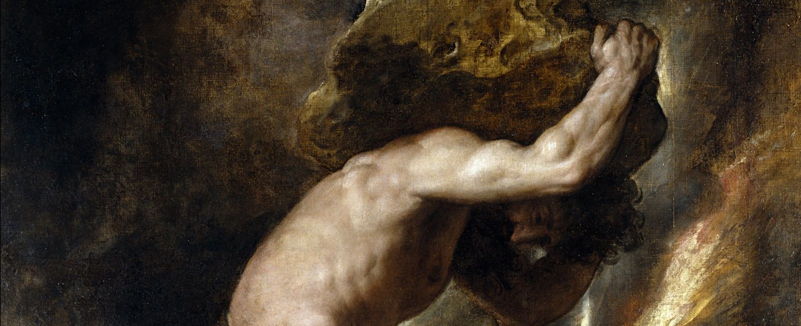
        </div>
      </div>
      <div class="espacement"></div>
      <div class="reveal">
        <h2 id="1B">B. ...spectateurs</h2>
        <p class="dissertation">
       Malgré cela, certains artistes acceptent que le spectateur ait un rôle dans leurs œuvres. Pour certaines œuvres c’est grâce au spectateur que le code agit sur l'œuvre et non pas son créateur. <br>
        Lessig émet, dans son texte <i>Code Is Law</i>, la possibilité que les internautes puissent eux aussi avoir un rôle dans l’agissement du code. "La seule question est de savoir si nous aurons collectivement un rôle dans leur choix ». Dans l’exposition, les internautes sont les spectateurs qui vont permettre au code d’agir grâce à certains de leurs agissements.<br>
        Alex Verhaest va elle-même faire fonctionner sa deuxième œuvre uniquement grâce à une action du spectateur qui fera agir le code. Cette œuvre fut influencée par ses voyages dans de multiples pays tel que d’abord en Chine, où elle y découvre la culture des hackers asiatiques. Elle intègre 6 mois le <i>centre d’art d’Islande</i> et va rejoindre un collectif nommé <i>Platform for Urban Investigations</i>. Puis, elle va partir à Mexico afin de participer à diverses expositions de son collectif. En 2009 elle va se concentrer sur ses propres créations et les présenter lors d’expositions collectives en Belgique et aux Pays-Bas puis en 2013, elle va faire sa première exposition personnelle sur son œuvre <i>Temps Mort</i> à Amsterdam. C’est le premier projet qu’elle a réalisé seule. Le scénario de <i>Temps mort</i> sert de base narrative à la série d’œuvres sur le suicide d’un père absent et l’incapacité des membres d’une famille à communiquer suite à cet incident tragique. L'œuvre contient plusieurs scènes dont La scène du dîner qui est présentée lors de l’exposition <i>Code Is Law</i>. Un numéro de téléphone est mis à disposition des visiteurs. Ce numéro va permettre de déclencher le scénario. Pour cela, le spectateur doit appeler le numéro en question. A partir de cet appel, l’un des protagonistes de la vidéo va recevoir un appel et la conversation entre les personnages va alors débuter. Si le spectateur n’appelle pas le numéro de téléphone qui active le film, il n’y a aucun agissement du code pour faire fonctionner l'œuvre.
        </p>
        <div class="row">
          <svg xmlns="http://www.w3.org/2000/svg" width="10vh" height="10vh" fill="currentColor"  class="bi-telephone-fill col-lg-3" id="phone" viewBox="0 0 16 16">
            <path fill-rule="evenodd" d="M1.885.511a1.745 1.745 0 0 1 2.61.163L6.29 2.98c.329.423.445.974.315 1.494l-.547 2.19a.678.678 0 0 0 .178.643l2.457 2.457a.678.678 0 0 0 .644.178l2.189-.547a1.745 1.745 0 0 1 1.494.315l2.306 1.794c.829.645.905 1.87.163 2.611l-1.034 1.034c-.74.74-1.846 1.065-2.877.702a18.634 18.634 0 0 1-7.01-4.42 18.634 18.634 0 0 1-4.42-7.009c-.362-1.03-.037-2.137.703-2.877L1.885.511z"/>
          </svg>
          <video class="col-lg-8" id="film">
            <source src="image/temps-mort.mp4">
          </video> 
        </div>       
      </div>
      <div class="espacement"></div>
      <div class="reveal">
        <p class="dissertation">La seconde œuvre proposée par Eric Vernhes dans <i>Code is Law</i> demande elle aussi au spectateur d’interagir afin qu’il permette au code d’agir. Il utilise le concept issu de la phénoménologie et crée des œuvres en lien avec des dispositifs dotés d’un mouvement intrinsèque qui épouse celui de la conscience du spectateur. « Eric Vernhes l’utilise dans son travail pour créer un moment magique : Celui où l’imaginaire du spectateur, mis en mouvement par l'œuvre, vient à s’incarner en elle». « Souvent l’art propose des questions. Le travail d’Eric Vernhes propose plutôt une ambition : conquérir un niveau toujours plus élevé de conscience de nous même, de nos corps, du monde et du temps afin de perpétuer, malgré tous les défis, l’expérience de notre humanité. »<br>
        <i>Horizon négatif</i> est un programme informatique qui génère des paysages composés de formes et de couleurs sur un écran grâce au mouvement que le spectateur fait face à une caméra. L’installation est écran positionné à hauteur d’Homme, sous celui-ci sont positionnées une enceinte et une caméra. <br>
        Les images générées par l'œuvre ne sont pas des paysages réels mais des empreintes lumineuses qui « impressionnent l’enfant pour sa vie à venir » nous raconte Eric Vernhes. En effet pour lui <i>Horizon négatif</i> présente des images qui sont issues de l'enfance “qui nous ont fascinés au point d’inspirer nos dessins et notre destin pour la vie à venir. »<br>
        Il a emprunté d’un livre réalisé par Paul Virilio le titre de son œuvre ainsi que les images marquantes de son enfance afin de réaliser son œuvre. Il s’agit de la vision des attaques maritimes et aériennes, à l’horizon, au large de Nantes.
        Cela l’a ensuite inspiré pour la conception du logiciel et de la sculpture.
        « Elle parle de certaines images d’enfance qui nous marquent et sur lesquelles peuvent se construire une vie. En l’occurrence, celle qui m’a inspirée m’a été transmise par Paul Virilio, qui après avoir été mon professeur à l’école d’architecture est devenu mon ami. Cette image est celle du littoral nantais bombardé durant la Seconde Guerre mondiale. Gardée en mémoire depuis l’enfance, elle a notamment façonné sa pensée sur la guerre et la vitesse. »<br>
        Lorsque le spectateur réalise un mouvement devant l'œuvre, à l’aide la caméra, elle permet la transmission d’informations qui influencent l’ensemble de la composition visuelle et sonore.
        </p>        
      </div>
      <div class="espacement"></div>
      <div class="reveal">
        <h2 id="1C">C. ...comportements extérieurs</h2>
        <p class="dissertation"> 
        De plus, l’exposition Code is Law a décidé d’étendre les facteurs possibles permettant au code d’agir. En effet ce ne sont plus uniquement les artistes et spectateurs qui vont pouvoir faire agir le code mais aussi à l’aide d’une nouvelle variable. Celle-ci est extérieur à l'œuvre et en fonction de son comportement le code agit de diverses manières.<br>
        Lessig explique dans son texte qu’il appartient aux codeurs de choisir s’ils souhaitent collaborer avec l’état ou bien s' ils veulent gérer leur code sans intervention extérieure. Il dit aussi  que lorsque « l’état se retire la place ne reste pas vide ». Il y a toujours quelqu’un d’extérieur avec qui le codeur peut s’associer. Dans l’exposition les artistes qui prennent la place des codeurs peuvent faire agir leur code à l’aide d'entités extérieures. Dans ce cas, ce n’est pas l'État mais quelqu’un d’autre qui prend sa place. <br>

        Antoine Bertin est né en 1985 et est diplômé de l’ENS Louis Lumière ainsi que du London College of Communication.
        Il produit une émission trimestrielle pour une web radio entre 2015 et 2020 qui se nomme « The edge of the forest » dans laquelle il diffuse des sons du monde que l’on ne peut pas voir. 
        Dans le hall extérieur de l’exposition, se trouve l'œuvre 333Hz. Antoine Bertin a réalisé une installation commandée par le centre Wallonie Bruxelles, à l’origine de l’exposition Code Is Law à Paris. Cette commande a été passée avec le conseil de Greenpeace France. Cette installation comporte un tas de 32 rondins de bois dont 20 contiennent un métronome. Cette pile d’arbres rappelle la manière dont ils sont entreposés en bordure des chemins après avoir été coupés. Sous ce tas de bois défilent les nombres de 2001 à 2021. Au fur et à mesure que le nombre avance, les divers métronomes accélèrent. Ils représentent le rythme de la déforestation de ces forêts. Elle est de 20 000 arbres par minute au point de vue mondial. Elle augmente depuis le début des mesures par la surveillance mondiale des forêts en 2001. Cette cadence, de 20 000 battements par minute, est si élevée qu'elle n’est pas perceptible pour l’oreille humaine. Antoine Bertin a donc choisi 333Hz qui sont perçus comme un son continue par l’oreille humaine. « Si tous les arbres qui tombent à travers le monde pouvaient être entendus, ils produisent donc un son : une fréquence de 333 Hz. »<br>
        Le battement par minutes étant une unité utilisée en musique pour mesurer le tempo, il permet de ramener la déforestation à une partition de musique.  Avec le battement par minute, l’artiste nous invite à écouter le rythme de la déforestation. Son installation va alors nous proposer d’écouter le rythme changeant au fil des ans de la déforestation dans une sélection de forêts primordiales. Ce sont les personnes à l'origine de la déforestation qui ont permis au code d’agir de cette manière et que l’on puisse entendre le rythme de la déforestation tel qu’il était écouté. Si la cadence de déforestation varie, le rythme musical de l'œuvre variera à son tour. 
        Dans son texte, Lessig explique aussi qu’il appartient au codeurs de choisir s’ils souhaitent collaborer avec l’état ou bien s' ils veulent gérer leur code sans intervention extérieure.
        Il avertit tout de même sur les dangers encourus si l’on n’hésite pas à se débrouiller sans l’aide de l’état, expliquant que si le code ne sert pas l’intérêt de l’état alors il servira d’autres intérêts qui ne relèvent pas du domaine du public et c’est ça qui pourrait menacer les libertés des individus.
        Dans ce cas présent ce projet sert les associations essayant de lutter contre la déforestation comme celui qui a créé la base de données regroupant les informations du nombre de déforestations par minute. L'œuvre sert des intérêts écologiques en faisant éveiller les consciences collectives. 
        </p>        
      </div>
      <div class="espacement"></div>
      <div class="reveal">
        <div class="row">
          <p class="dissertation col-lg-5 align-self-center">
            Le code de l’œuvre <i>Spectrogramme</i> quant à lui marche aussi grâce à des éléments extérieurs. Ce sont les ondes.  L'ordinateur retransmet les flux électromagnétiques captés par les antennes en cuivre à une vieille machine à tricoter.<br>
            Sa créatrice, Claire Williams, possède un master en Design Textile. Elle fait des expositions internationales ainsi que des ateliers durant divers événements culturels tels que des festivals ou bien des musées. Les travaux de Claire Williams mélangent l’art sonore et électronique avec le monde du textile. Elle crée des dispositifs techniques permettant de mettre en avant ce qui nous est invisible dans notre monde, par exemple, en permettant à travers ses œuvres de montrer les mouvements électromagnétiques de notre magnétosphère ou encore en donnant une apparence textile aux phénomènes sonores ou encore en nous montrant l’éther.<br>
            Elle détourne alors la machine a tricoter en <i>spectrogramme</i> afin de transformer les pixels traduits en 0 et 1 en points tricotés rendant palpables les variations sonores du lieu ou ceux enregistrés ailleurs : au coin de la rue ou au fin fond de la forêt des Ardennes. Elle tricote rang par rang le spectre hertzien de ces fréquences sonores et les encode au sein même de sa matière. Un système programmé donne la possibilité à ces quatre langages (sonore, numérique, électronique et textile) de communiquer de manière autonome dans une boucle ou l'humain est exclu, rendant tangible leurs conversations mathématiques. Le code de l'œuvre agit en fonction de son environnement afin de réaliser une œuvre unique en fonction de son moment unique.
          </p>
          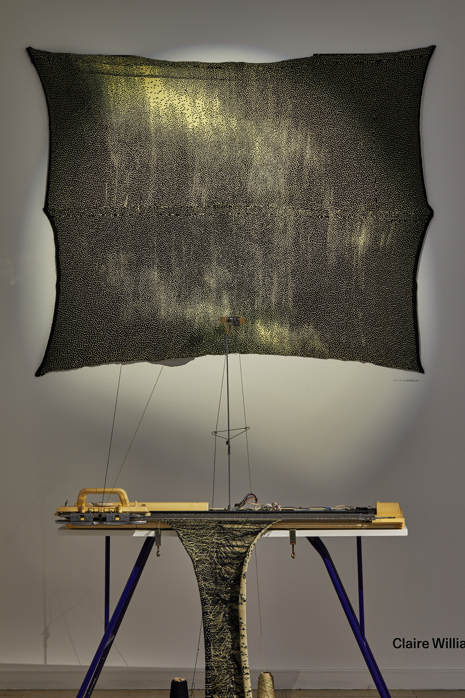
        </div>
      </div>
      <div class="espacement"></div>
      <div class="reveal">
        <h1 id="G2">II. Le rapport de l'identité à l'œuvre</h1>
      </div>
      <div class="reveal">
        <h2 id="2A">A. L'identité qu'on ignore</h2>
        <div class="row">
          <p class="dissertation mb-5">
            Dans son texte, nous avons vu que Lessig a parlé du protocole TCP/IP qui permet à deux ordinateurs interconnectés d’échanger des données. La particularité étant que ce protocole qui transporte les données est incapable de connaître ce qu’il transporte donc il est neutre envers les utilisateurs. Ainsi, avec ce fonctionnement, il est compliqué de contrôler le comportement des individus sur internet alors de cette manière, les gouvernements ne peuvent pas réguler ce qui circule sur internet malgré les lois. Cela peut alors paraître bénéfique car cela favorise la liberté d’expression mais cela peut aussi renforcer des comportements déviants sur des idéologies ou le trafic commercial.
            Dans le texte de Lawrence Lessig, ce sont les utilisateurs de l’ordinateur qui peuvent être anonymes et protéger leurs identités. Dans l'exposition, les spectateurs, faisant office d’utilisateurs de certaines œuvres sont eux aussi protégés d’anonymat.
          </p>
          
          <p class="dissertation col-lg-8 align-self-center m-0">
            C’est le cas de l’œuvre <i>Horizon négatif</i> qui feint des paysages composés de formes et de couleurs sur un écran. Ses formes et couleurs se produisent grâce au mouvement que le spectateur réalise face à une caméra.
            Le mouvement du spectateur de l'œuvre ne nous donne aucune indication sur son identité. Il ne sert qu'à faire réagir l'œuvre à son mouvement, peu importe qui il est. Nous n’avons aucune information sur qui il peut être, comme l’utilisateur de l’ordinateur.  
          </p>
        </div>
      </div>
      <div class="espacement"></div>
      <div class="reveal">
        <div class="row">
          <p class="dissertation col-lg-8 align-self-center m-0">
            Dans un autre point de vue, l’exposition a aussi traité l’anonymat d’autres éléments n’étant pas les spectateurs. En effet, certaines œuvres comme 333 HZ réalisé par Antoine Bertin dont nous avons parlé précédemment traitent elles aussi de l’anonymat. En effet, cette installation plastique et sonore exposée dans le hall de l’exposition <i>Code Is Law</i> représente la chute d’un arbre par minute. Chacune des baguettes des métronomes présentes sur les rondins de bois battent contre eux à la cadence de la déforestation d’une forêt primordiale. Chaque pulsation que l’on peut entendre représente alors la perte d’un arbre. On peut alors entendre la chute de tous les arbres qui tombent ensemble dans la même minute. Nous ne savons pas quel arbre précisément tombe. Son identité est inconnue. Nous entendons uniquement le son représentant sa chute a une époque donnée
          </p>
          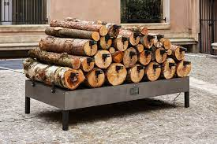
        </div>
      </div>
      <div class="espacement"></div>
      <div class="reveal">
        <p class="dissertation">
          L'œuvre <i>Species Counterpoint</i>, realiser par Antoine Bertin, quant à elle est un piano en bois qui réalise de la musique à l’aide d’un code génétique humain et de plantes. Antoine Bertin mêle son travail à la science et la musique. Ses créations artistiques se basent sur l’écoute, la sculpture sonore ainsi que la méditation audio sur les êtres vivants. <i>Species Counterpoint</i> est une œuvre composée un piano mécanique qui joue en même temps la séquence ADN de plantes et d’un être humain. Sachant que les plantes et les humains ont 60 % de leur ADN en commun. Cette composition jouent alors 60 % de notes communes et cela nous invite à écouter le lien de parenté entre les plantes et les Hommes.Le piano est constitué de plusieurs matériaux qui sont l’érable, l’hêtre, l’aulne, le charme, le palissandre, le cerf, le lapin, la cochenille, la vache, la laine de mouton, la chèvre et le caoutchouc. Nous entendons donc la façon dont le son est diffusé à travers tous ses animaux. Nous ne savons pas à qui appartient l’ADN de l'œuvre.<br>
          La traduction de l’ADN en son se fait à travers un processus nommé la « sonification » qui permet de transformer les données en son. Ce procédé s’observe tous les jours dans divers phénomènes tels que le bruit d’une horloge ou bien le son que produisent certains véhicules lorsqu’on les verrouille.
          L’ADN contient quatre nucléotides différents, Chacun de ses nucléotides a été associé à une touche de ce piano à l’aide d’un logiciel développé par l’artiste.L’installation utilise des séquences ADN qui gèrent les fonctions communes entre l’humain et la plante telles que : manger, respirer, se reproduire, ressentir, dormir, se défendre, déféquer et mourir. L’identité de cette plante et de cet humain sont inconnus puisque l’artiste a réharmonisé la mélodie provoquée initialement par les deux individus. <br>
          Alors avec le code génétique qui a été récupéré pour jouer ce contrepoint, on pourrait penser qu’il est techniquement possible de connaître l’identité complète d’un individu, seulement l’on a utilisé que les fonctions basiques d’un être vivant alors elles sont communes à tous les êtres humains.
          On ne pourra alors jamais retrouver leurs identités via la mélodie.
        </p>
        <div class="reveal">
        <div>
          <audio src="audio/species-counterpoint.mp3" id="species"></audio>
          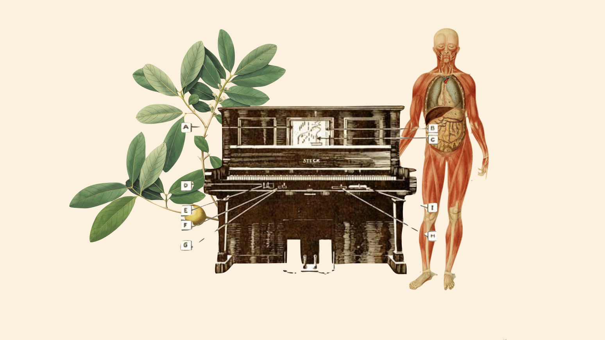
        </div>
      </div>
      </div>
      <div class="espacement"></div>
      <div class="reveal">
        <h2 id="2B">B. L'identité reconnaissable</h2>
        <p class="dissertation">
          Dans son texte, Lessig émet deux hypothèses pour mettre en place le contrôle des données. Une méthode dont la diffusion de l’identité serait limitée à un minimum et une seconde méthode, qu’il ne défend pas, dévoilait la totalité d’une identité.  La question de la régulation par le code implique alors le respect de la vie privée qui n’est pas une notion qui s’arrête au cyberespace.<br>
          Lessig déduit qu’il revient alors à ceux qui codent de choisir s’ils souhaitent respecter l’éthique des valeurs de la loi. Puisque le monde est moins enclin à faire confiance au gouvernement et à l’autorité, cette réponse semble être la bonne.
          La première option que défend Lessig nous dit alors que le contrôle des données se limite au minimum. Mais le peu de données qui sont contrôlées permettent qu’on reconnaissent certaines informations et donc les identités.
          L'œuvre de François de Coninck et Damien De Lepeleire du nom de <i>J’ai de la chance</i> représente bien cela. <br>
          Ensembles ils réalisent <i>J’ai de la chance</i> un livre de 64 pages imprimé sur papier Munken Bioset de 150 gr au format de 22 cm sur 18 cm. Certaines de ces pages étaient exposées à l’exposition <i>Code is Law</i> et montrent une série d’écrans de recherche Google reproduits en aquarelle. Le livre est réalisé par François de Connick et peint en aquarelle par Damien Delepeire, et peut se vendre à 20€.
        </p>
        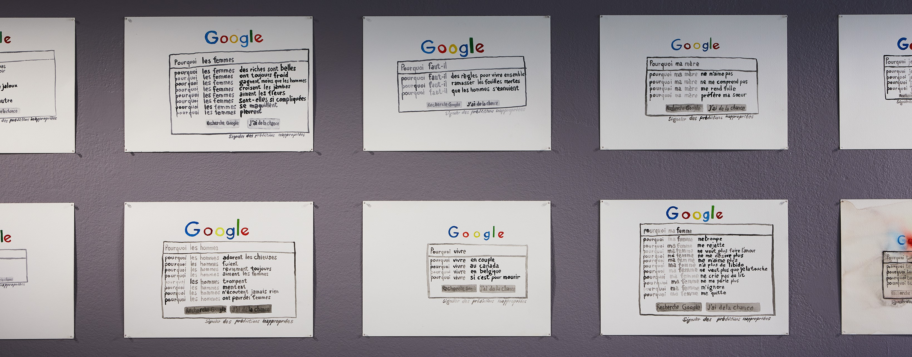
      </div>
      <div class="reveal">
        <p class="dissertation">
          L'œuvre, nommée renvoie à une fonctionnalité qui fait partie des choses ayant permis le succès de Google. C’était le bouton <i>J’ai de la chance</i> . Celui-ci était imaginé à une époque où les interfaces de recherches étaient en rivalités de complexité. Chaque tentative d’offrir le plus de choix possibles à l’utilisateur, cette option ajoutait une dimension ludique à toute requête. <i>J’ai de la chance</i> de choisir la 1ère proposition de google et de lancer la recherche. François de Coninck va s’intéresser aux questions que les gens posent sur Google et la réponse qu’il leur est proposée. Leurs questions proviennent parfois d'une “curiosité, lassitude ou désespoir » de l’utilisateur. Comme le dit Pierre-Yves Desaive. Ces questions ne semblent pas nécessiter de réelles réponses. Francois de Connick a décidé de poser ces questions à Google depuis plusieurs ordinateurs, en ayant un profil d’utilisateur différent sur chacun. Il va alors écrire le début de différentes question comme: « Pourquoi mon mari », « Pourquoi ma femme », « Pourquoi les filles », « Pourquoi le désir », « Pourquoi les artistes », … 
          Il constate alors des similitudes dans les suites possibles de ces questions qu’il a proposées entre chaque utilisateurs.
        </p>
        <p class="dissertation">
         On comprend alors que les résultats qu’il obtient ne se doivent pas au hasard. En effet, ils sont liés aux informations personnelles stockées dans le profil de l’utilisateur. Ces informations permettent d’opérer un ciblage très précis. Les suggestions de Google sont sous le même principe. L’algorithme est chargé de suggérer des termes de recherche, en utilisant une dizaine de paramètres. Les propositions nous permettent alors d’avoir des informations sur les utilisateurs.<br><br> 

          Pour Pierre-Yves Desaive, historien de l’art, <i>J’ai de la chance </i> pose des questions fondamentales quant à la place prise aujourd’hui par Google dans nos vies quotidiennes, à l’heure où des assistants vocaux, de plus en plus intrusifs, se multiplient. » On constate aussi que le projet a une grande particularité grâce à son support. En effet François de Connick a ensuite envoyé les captures d’écran de ses recherches à Damien De Lepeleire qui les a transposées en aquarelles. Plutôt que de peindre des pommes et des poires dans des plats, comme le fait la peinture de nature morte habituelle, Damien de Lepeire lui, peint des lettres. Il réalise une typographie à main levée, qui évoque l’art de la calligraphie. Celui-ci « ne permet aucun repentir et produit un résultat imparfait par nature (la taille des lettres, ou celle des espaces qui les séparent, sont variables). » « Cette imperfection apparaît comme un contrepied à la rigueur toute numérique des polices telles qu’elles s’affichent sur un écran. »
          De plus, cette transposition de captures d’écran en aquarelles consiste à « pérenniser une performance numérique ». En effet l'œuvre ne sera plus numérique et sera donc soumise aux aléas tel que les conditions de conservation, comme une œuvre d’art classique et pas numérique.
        </p>
        <div class="row recherche">
          <svg xmlns="http://www.w3.org/2000/svg" width="50" height="50" fill="currentColor" class="bi bi-search" viewBox="0 0 16 16">
            <path d="M11.742 10.344a6.5 6.5 0 1 0-1.397 1.398h-.001c.03.04.062.078.098.115l3.85 3.85a1 1 0 0 0 1.415-1.414l-3.85-3.85a1.007 1.007 0 0 0-.115-.1zM12 6.5a5.5 5.5 0 1 1-11 0 5.5 5.5 0 0 1 11 0z"/>
          </svg>
          <p class="word">
          </p>
        </div>
      </div>
      <div class="espacement"></div>
      <div class="reveal">
        <p class="dissertation">
          Le projet de recherche en cours sur la topographie du bassin amazonien, <i>Rìos casquet à (Japurà) & Juruà</i>, de Laura Colmenares Guerra, introduit quant à lui une lecture basée sur l’observation et l’analyse de métadonnées telles que les hashtags des réseaux sociaux comme par exemple #wildfires, #AmazonFires et #SaveTheAmazons ou encore les informations géo-référencées liées aux enjeux socio-environnementaux du bassin amazonien ainsi que l’analyse linguistique de Twitter. En effet, depuis 2018, beaucoup d’informations circulent concernant la destruction de l’Amazonie, la forêt tropicale la plus importante du monde, appelée le poumon de la Terre et depuis ces cinquante dernières années, la façon dont ce territoire est géré se complexifie pour au final apporter beaucoup de conflits géopolitiques. Toutes ces analyses sont réalisées à l’aide du logiciel Rivers // Amazonia Geo-linguistics qui est un outil de recherche expérimental qui permet de cartographier les informations liées à l’Amazonie sur les réseaux sociaux destiné aux organisations, aux artistes, aux journalistes, aux chercheurs et aux militants.<br>
          <i>Rios</i> propose une série de cartographies spéculatives issues d’un processus numérique de l’hybridation des données liées à l’Amazonie. Le travail cartographique de <i>Rios</i> sera au final composé d’une série de 13 sculptures. Chaque sculpture est basée sur des données topographiques d’un territoire délimité par les principaux sous-bassins formant le bassin amazonien et par les principaux affluents qui nourrissent le fleuve Amazone.<br>
          Les 13 bassins représentés sont : Tocantins, Xingu, Tapajós, Madeira, Purus, Ucayali, Marañón, Napo, Putumayo (Içá), Caquetá (Japurá), Juruá, Negro, Trombetas.
          Durant l’exposition <i>Code Is Law</i>, seules les deux premières sculptures déjà réalisées sont présentées. Elles sont basées sur deux sous-bassins : Caquetà et Juruà.
          Les modèles numériques d’élévation sont utilisés pour générer des représentations cartographiques volumétriques qui donnent des modèles 3D qui sont par la suite imprimés par une imprimante 3D à l’aide d’argile.
          Ces maquettes sont alors vues comme des pièces archéologiques qui contiennent des informations, des archives d’un moment historique enregistrant les relations sémantiques entre les hashtags sur les sujets environnementaux et sociaux qui gravitent autour de l’Amazonie.<br>

          Cette œuvre montre que nous sommes construits par les autres surtout sur internet. Puisque ses sculptures sont issues des hashtags de la communauté sur Twitter. Ce sont les membres de Twitter qui ont contribué à la construction de cette statue. Cette statue est semblable à un fossi, une empreinte de l’Amazonie qui définit son identité. L’ensemble des 13 statues représente alors la totalité de son identité, une identité à la fois constituée de ce qu’elle est mais aussi de ce que les gens en font et en disent. Le cyberespace régule la construction de ces « empreintes » puisque c’est dépendant de ce qui est dit sur twitter.
        </p>
      </div>
      <div class="reveal offset-lg-3 col-lg-6">
        <div class="vingt">
          
          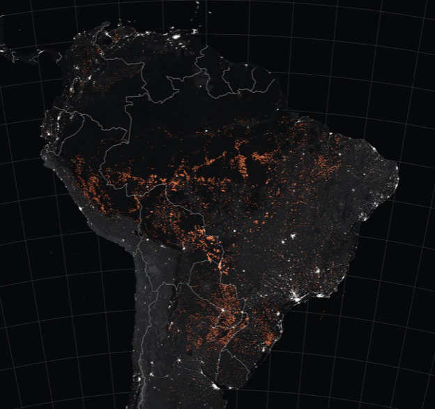
        </div>
      </div>
      <div class="espacement"></div>
      <div class="reveal">
        <p class="dissertation">
         Les informations que donnent délibérément les utilisateurs permetteraient aussi de reconnaître son identité. C’est le cas de l'œuvre performative <i>Mes organes mes Datas</i>. Celle-ci est une conférence performative dans laquelle Jacques André offre  à l'aide de son smartphone et d’une balance connectée, une vision positive des algorithmes et de ce qu’ils rendent possible. Elle attire l’attention sur l’influence des “bio-data”. Les bio-data sont récoltées par nos objets connectés. Nous avons alors accès à la représentation de nos corps et, finalement, nos existences.<br>
          Il est intéressé par le corps et les mesures telles qu’on les retrouvent dans, par exemple, les montres connectées. Celles-ci fonctionnent grâce aux mouvements de notre poignet et peuvent alors mesurer la qualité de nos nuits ou bien le nombre de pas effectués dans la journée et explorer cette “archéologie du corps calculé”. Les algorithmes traduisent l’ « intimité corporelle” en données converties en toutes sortes de calculs et statistiques. Dans sa conférence performative il offre une vision positive des algorithmes et de ce qu’ils rendent possible. Elle attire l’attention sur l’influence des “bio-data ». Les bio-data sont récoltées par nos objets connectés. Nous avons alors accès à la représentation de nos corps et, finalement, nos existences. On capte alors l’identité d’une personne grâce aux données rentrées dans le smartphone. <br>
          Cette performance est réalisée à partir d’une enquête menée par l’artiste depuis 2018 via les objets connectés et nouvelles applications ou celles en développement ainsi qu’études, index et références historiques. Dans la première version, de <i>Mes organes mes datas</i> qui est plus courte, Jacques André rappelait l’historique des mesures, et ainsi celui des normes. Il laissait défiler sur l’écran derrière lui les canons de beauté statuaires grecques et romains, l’Homme de Vitruve de Léonard de Vinci, le Modulor de Le Corbusier mais aussi les corps “parfaits” qui étaient dans les magazines.<br>
          Il met au centre de son raisonnement l’indice de masse corporelle inventé au milieu du 19e siècle par le mathématicien belge Antoine Quetelet. Le calcul de l’homme moyen est calculé grâce au rapport entre le poids et la taille. 
          Cet IMC est encore utilisé aujourd’hui pour évaluer ce qui est un poids « normal » ou non.  Il régit les critères de santé ainsi que nos polices d’assurances. Celles-ci visent à attaquer l’obésité qui est très peu appréciée à notre époque. Elle est causée par le manque de sommeil ou le stress chronique qui est détectable par les objets ou applications dont nous venons de parler. Ils proposent alors une meilleure hygiène de vie, ainsi que d’autres choses. 
          Le corps finit donc par se résumer à sa composition : la masse maigre, graisseuse, osseuse. Mais aussi ses phases de sommeil ou son rythme cardiaque et respiratoire qui calcule l’état émotionnel.
        </p>
        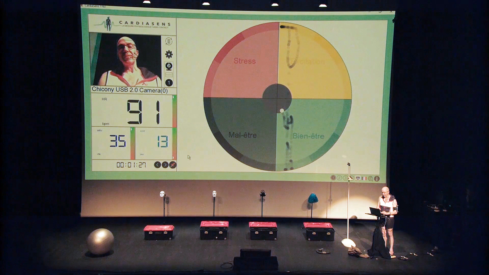
      </div>
      <div class="espacement"></div>
      <div class="reveal">
        <h2 id="2C">C. L'identité modifiable</h2>
        <p class="dissertation">
          Cependant Jacques André nous rappelle et démontre que ces chiffres oublient l’impermanence de l’organique. En effet on peut perdre 2 cm en une journée qu’on récupère la nuit, et varier d’une centaine de grammes entre les jours. Il nous rappelle aussi les différences corporelles entre les pays et régions du monde entier.  Il remet en question le fait qu'on ne soit évalué et caractérisé que par ces critères. Comme le dit Aurélie Cavanna en partenariat avec le centre Wallonie Bruxelles » Jacques André, affublé en permanence de ces capteurs, cherche une autre poétique du corps. Cette poétique déjouerait, désormais informée, les excès de conformisme, contrôle et pensée majoritaire afin d’y trouver des “respirations” et davantage de liberté. » <br>
          Cette identité est donc modifiable puisque on change de poids, de taille et d’autres paramètres aisément dans notre vie à cause de certains facteurs. 
          Lessig parle de cette idée dans son texte en présentant deux protocoles qui émergent au début des années 2000 et qui menacent la liberté et rendent le cyberespace contrôlable. Avec d’une part, la possibilité de contrôler l’identité des utilisateurs qui circulent sur internet et d’autre part la possibilité de contrôler le contenu qui circule. Dans ce point de vue, ce sont ici les utilisateurs qui contrôlent le contenu qu’ils font circuler en indiquant les données (vraies ou non) sur leur identité corporelle et leur mode de vie. Il en vient à nous de dire la vérité ou non ou bien de choisir ce qu’on communique.
        </p>
        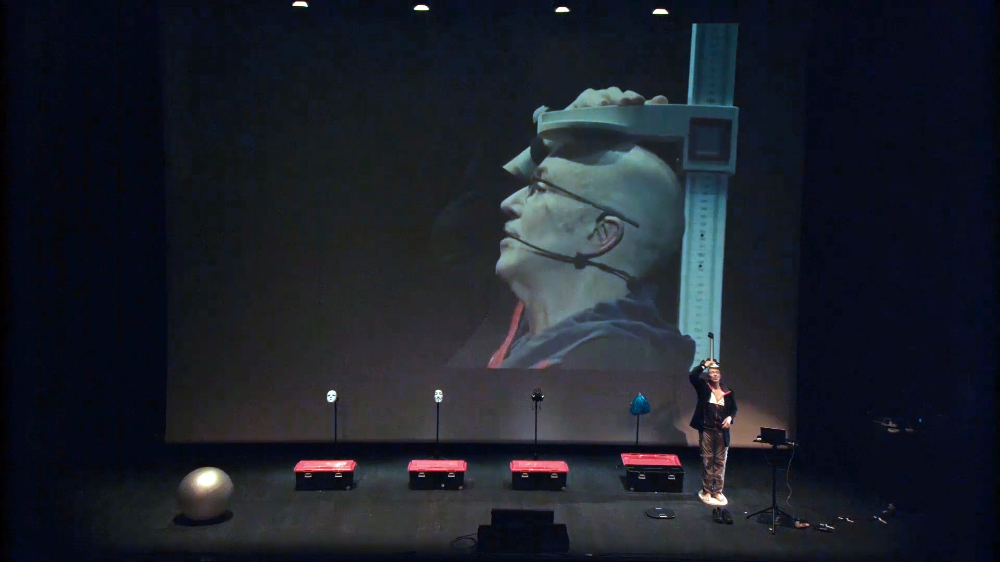
      </div>
      <div class="espacement"></div>
      <div class="reveal">        
          <p class="dissertation"> 
            La deuxième œuvre qu’a exposée Natalia de Mello dans <i>Code Is Law</i> est Ami, mode d’emploi. C’est une ancienne œuvre participative réalisée de 2003 à 2005 et qui a permis la réalisation du mode d’emploi qu'elle a fini et retravaillé pour l’exposition. L'œuvre est inspirée du mode d’emploi d’un chien robot appliqué à l’humain sur le mode du tamagotchi. Elle a remplacé le mot chien par le mot ami dans le mode d’emploi afin de poser la question de la relation entre robot et humain. S’il est peut être possible qu’un robot soit ami avec un humain et à quel point on peut  cohabiter avec une machine électronique et l’intelligence artificielle. A cette période Facebook n’existait pas. De nombreux amis ont été créés entre 2003 et 2005 à l’aide de dons d’images de leurs corps que faisaient les spectateurs de l'œuvre. Elle réalisa une mini-installation participative et des performances où chacun donnait une partie d’une image de son corps pour créer des nouveaux amis. Les images de parties du corps données par les spectateurs étaient ensuite collées sur des danseuses qui dansaient ensuite avec ce nouveau corps. A la fin de la danse elles sont devenues des machines et les spectateurs pouvaient venir poser et prendre une photo souvenir de leur ami. Cet <i> Ami </i> est unique puisqu’il est composé de plusieurs parties du corps de personnes ayant participé à cette performance. Leur identité est modifiable puisqu'il suffit de changer la partie du corps souhaitée par une celle d’une autre personne sur le corps des danseuses. De plus, chaque <i> Ami </i> a le corps de plusieurs humains et sont donc différents. L’identité de <i>l'Ami</i> est donc infiniment modifiable.<br>
          </p>
          <div class="row">
          <p class="dissertation col-lg-6 m-0 align-self-center">
            Ces performances visaient à mettre en garde contre la tendance à traiter l’humain comme un objet à mesure que s’accroît notre sentiment de dépendance à l’égard de la machine. Elle pointe alors deux générations de robots domestiques, les premiers « étaient des machines-outils conçues pour nous assister dans nos tâches quotidiennes et nous faciliter la vie », les deuxième étaient sous la forme de « gadgets, de jouets et de substituts de nos animaux de compagnie, adoptant volontiers des allures humanoïdes ou animaloïdes (chiens-robots, etc.) ». Cette deuxième génération a alors besoin que l’on s’occupe d’elle. Natalia de Mello parle même d’un sentiment de culpabilité de la part de l’Homme si nous les délaissons. Dans le mode d’emploi on peut voir que amis se réveillent grâce à nos mouvements, qu’il peut marcher et jouer. De plus, il peut se déplacer et possède de nombreuses expressions faciales comme un humain. Il donne aussi l’heure, voit la nuit, et peut être programmé à notre convenance. Son intelligence artificielle permet d’avoir des discussions comme avec un humain. « Devenue prolongement nerveux et prosthétique de notre être social qui régule et détermine une large part de nos relations sociales, la machine peut générer chez l’humain un sentiment d’isolement et d’exclusion sociale, mais aussi de dépendance d’impuissance à son égard. »   
          </p>
          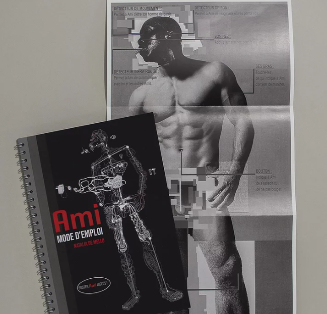
        </div>
      </div>
      <div class="espacement"></div>
      <div class="reveal">
        <p class="dissertation"> 
             L’œuvre Spectrogramme dont nous avons précédemment décrit son code a aussi un rapport à l'identité qui est modifiable à l'infini. Ce n’est plus un rapport quelconque avec l’apport de données de l’utilisateur mais celui de son environnement. En effet, nous avons vu que l'œuvre de Claire Williams marche grâce à des éléments extérieurs. <br>
            Durant l’exposition, on peut observer un travail en cours présent sur cette machine à coudre, ce travail représente le portrait électromagnétique du Centre Wallonie-Bruxelles.
            Ce travail représente alors l’identité électromagnétique du Centre Wallonie-Bruxelles. Une identité qui est façonnée par tout ce qui parcourt ce lieu et qui lui est unique.<br>
            Cette œuvre de Claire Williams permet de représenter une identité sonore.
            Cependant, cette identité est critiquable, puisque rien ne garantit que cette identité serait toujours la même si l’on décidait de recommencer la couture depuis le départ. Mais aussi, le travail n’est jamais complet puisque l’on pourrait continuer de coudre indéfiniment alors ce qui nous est présenté n’est qu’une infime partie d’une identité qui continuerait de se construire indéfiniment. 
            Cela est comparable à internet et la technologie de manière générale. Elle continue de se développer et de se construire chaque jour car sur internet, rien n’est figé. Comme l’identité des individus sur internet est très malléable, étant généralement cachée derrière des pseudonymes et résumée à ce que les personnes regardent, likent et s’abonnent.
        </p>
      </div>
      <div class="espacement"></div>
      <div class="reveal">
        <h1 id="G3">III. Codes = œuvres</h1>
      </div>
      <div class="reveal">
        <h2 id="3A">A. Code informatique</h2>
        <p class="dissertation">
          Dans son titre <i>Code Is Law</i>, Lawrence Lessig parle du mot code qu’il l’associe à la loi. Il semble parler plus précisément du code informatique. Un « Système ou suite de symboles destinés à représenter et à transmettre une information » d’après le petit Robert.  Le code ferait la loi et serait partie présente dans l'œuvre.<br>
          <i>Sisyphean games</i> est une œuvre qui retranscrit cette idée que le code présent dans cette exposition est le code informatique. Un jeu vidéo est un jeu nécessitant un dispositif informatique comme un ordinateur ou une console de jeu dans lequel le joueur agit sur un environnement virtuel. Les jeux vidéos se rapprochent davantage des arts tels que le cinéma que des jeux comme les jeux de sociétés. On peut prendre en exemple la création des cyber musées dans les jeux vidéos qui montrent cette fusion entre l’art et l’informatique. En effet, un jeu vidéo est dans son essence la forme d’art la plus informatisée. L’existence du jeu est due à l’informatique car les actions des personnages, la physique des éléments du jeu, l’apparence de tout ce qui est visible, l’interface et le scénario du jeu sont définis par un code qui est tapé dans un langage informatique tel que le C++, le C# ou bien encore Java qui sont des langages informatiques très répandus dans le monde du code et de l’informatique.
        </p>
        
      </div>
      <div class="espacement"></div>
      <div class="reveal">
        <p class="dissertation">
          Natalia De Mello, née en Lausanne en 1966, de nationalité belge et portugaise à été interviewée à propos de l’exposition <i>Code Is Law</i>. Lorsqu'elle parle de son titre, elle nous annonce le trouver un peu radical.  En effet pour elle on ne doit pas nécessairement savoir faire du code pour en donner son point de vue et en faire son point de vue sans que ce soit nécessairement une démonstration de codage. 
          Le code, pour elle, est un “langage électrique et électronique » qui nous tend à être dans une autre forme de labyrinthe. Ce n’est plus linéaire mais un réseau. Il faut s’intégrer et pas l’ignorer, apprendre à utiliser ces outils là, c’est un langage de lumière l'électricité. C’est ce qu'elle fait pour réaliser son œuvre <i>Machin Machine</i>, elle a créé une machine qui à l'aide de code informatique existant, ce n’est pas elle qui l’a codé. Malgré cela, elle a utilisé un code informatique afin de faire émettre le son des enceintes contenues dans les boîtes. 
          Elle ajoute que  « dans une période où on est fort isolé, où c’est surtout par la machine qu’on est en lien avec les autres, là on est un peu dans la relation humaine et concrète. »
        </p>
        <iframe class ="offset-lg-1 col-lg-10" width="560" height="315" src="https://www.youtube.com/embed/-HALBoctesk" title="YouTube video player" frameborder="0" allow="accelerometer; autoplay; clipboard-write; encrypted-media; gyroscope; picture-in-picture" allowfullscreen></iframe>
      </div>
      <div class="espacement"></div>
      <div class="reveal">
        <h2 id="3B">B. Bases de données</h2>
        <p class="dissertation">
          Comme le dit Natalia de Mello, nous n’avons pas besoin de savoir coder pour pouvoir utiliser ce code et en créer une œuvre. Certains utilisent des bases de données afin de créer leurs œuvres. Son œuvre <i>Ami</i> par exemple qui est une performance lors de laquelle les participants Scan une partie de leurs corps qui est ensuite déposé sur une danseuse pour quelle devienne leurs <i>Ami</i>. Les parties du corps scanner servent de base de données à la création esthétique de <i>l'Ami</i>.
        </p>
        <div class="row">
          <p class="dissertation col-lg-8 align-self-center">
            Une base de donnée est un "ensemble structuré de fichiers regroupant des informations ayant certains caractères en commun ; logiciel permettant de constituer et de gérer ces fichiers."
            Pour réaliser l'œuvre <i>333HZ Antoine Bertin</i> c’est quant à lui basé sur les mesures effectuées par la plateforme Global Forest Watch (GFW) depuis 2001, environ 20 millions d’hectares de forêt disparaissent par an. Il a utilisé les données récoltées au moyen d'imagerie satellite par la plateforme Global Forest Watch (GFW) afin de proposer une « sonification » de la déforestation. Cette composition sonore vise à représenter la disparition des forêts anciennes européennes. 
          </p>
          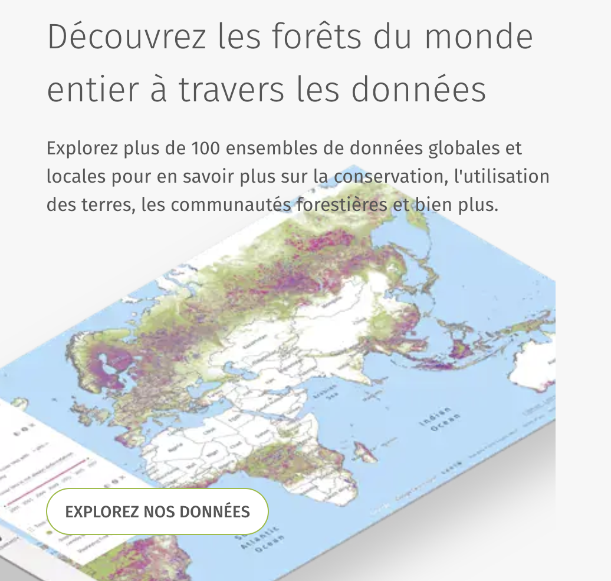
        </div>
      </div>
      <div class="espacement"></div>
      <div class="reveal">
        <p class="dissertation">
          Toujours concernant la forêt amazonienne, l'œuvre <i>Rios</i> de Laura Colmenares Guerra quant à elle utilise une source moins conventionnelle du nom de Twitter. A l’aide des hashtag de la communauté elle va réaliser une cartographie de l’Amazonie en dénonçant ses feux de forêts répétitifs.<br><br>
          Lors de la performance de Jacques André <i> Mes organes mes datas </i> nous voyons que l’IMC régule si l’on est en bonne santé ou non. Notre corps est finalement résumé par des masses maigre, graisseuse, osseuse, ainsi que nos phases de sommeil ou rythmes cardiaque et respiratoire qui calcul l’état émotionnel. Les application qui suivent notre évolution corporelle stock ses informations dans des bases de donnés afin de nous montrer notre progression. 
          Cette performance est réalisée à partir d’une enquête menée par l’artiste depuis 2018 via les objects connectés et nouvelles application ou celles en développement ainsi qu’études, index et  références historiques qui lui servent aussi de basent de données pour réaliser cette performance. 
        </p>
      </div>
      <div class="espacement"></div>
      <div class="reveal">
        <h2 id="3C">C. Code génétique</h2>
        <p class="dissertation">
          <i>Code Is Law</i> reprend l’utilisation du mot code mais en l’élargissant. En effet dans l’exposition il n’y a pas que le code informatique ou les bases de données qui sont utilisées.<br>
          Le mot code peut aussi être défini d’après le petit Robert comme un « Système structuré de signes », dans ce cas il y a par exemple le code génétique, qui est un dispositif matériel disposé sur les gènes et permettant la transmission des caractères héréditaires. On peut retrouver une œuvre dans l’exposition <i>Code Is Law</i> dans laquelle le code génétique est utilisé. Il s’agit de <i>Species Counterpoint</i> réalisé par Antoine Bertin. En effet c’est l'œuvre dans laquelle le code génétique de la plante et l’homme dicte les notes de musiques. L’ordre des nucléotides ont été insérés dans le logiciel MAX MSP avant d’associer celles-ci à une touche de clavier. Le code génétique fait alors office de code informatique et dicte, comme le fait par exemple le code binaire, comment doit réagir l’œuvre.
        </p>
        
      </div>
      <div class="espacement"></div>
      <div class="reveal">
        <p class="dissertation">
          Moins évident, il y a aussi l'œuvre <i>Mes organes mes datas</i> de Jacques André. En effet lorsque l’on rentre dans l’application des informations provenant de notre caractère génétique. En effet, notre taille adulte est, par exemple, estimée dès l'âge de 2 ans par le médecin. De plus, notre poids est lui aussi dû à la génétique, même s’il y a une part de causes environnementales, nos corpulences sont dues généralement à la génétique. Certains corps ayant une tendance génétique à stocker le gras à certains endroits seront plus gros que ceux qui ont un métabolisme qui brûle un grand nombre de calories. <br><br>

          Dans la scène du Dîner de l'œuvre audiovisuelle <i>Temps morts</i> on peut voir que les personnages ont tous leurs double sauf celui au centre. Leurs code génétique est identique et les deux personnes sont liées puisque l’une parle et l’autre réagit comme si elles étaient une et même personne. Cette action fait penser aux jumelles qui ont aussi pratiquement le même code génétique. De plus, ces personnages sont issus tous de la même famille. Ils ont, probablement, le même code génétique.
        </p>
      </div>
      <div class="espacement"></div>
      <div class="reveal">
        <h1 id="conclusion">Conclusion et ouverture</h1>
      </div>
      <div class="reveal">
        <p class="dissertation">
          Après avoir vu et analysé les diverses œuvres présente lors de l’exposition Code Is Law nous pouvons donc conclure que les artistes ont réalisé des œuvres défendant le point de vue de Lawrence Lessig. <br>
          Malgré cela, les artistes et les commissaires d’expositions y ont ajouté une vision contemporaine du texte en dépassant ses limites. L’exposition montre ce que voulait démontrer Lawrence Lessig dans son texte. L’exposition reprend la manière dont le contrôle du code est définie par Lessig. Un code contrôlé par des codeurs mais où l’utilisateur à son mot à dire, au risque que ce code finisse entre de mauvaises mains et servent des intérêts qui peuvent être néfastes pour l’utilisateur.
          Lawrence Lessig parle aussi de l’identité. Ce rapport entre l'œuvre et l’identité était très présent dans les œuvres de l’exposition. Lessig défendait la thèse d’une identité inconnue sur internet. Les œuvres des artistes reprennent cette thèse et l'élargissent. L'identité ne concerne pas uniquement celle de l’utilisateur mais aussi des éléments présents dans l'œuvre ou ses sources. Mais celles-ci ne sont pas uniquement inconnues. L’identité est parfois inconnue mais aussi partiellement reconnaissable ou modifiable. De plus, les artistes parlent du code de manière large et pas uniquement du code informatique. Ils l'entendent sous d’autres possibilités pour réaliser leurs œuvres. 
          L’exposition représente alors bien le texte de Lessig avec une vision contemporaine des artistes sur le code et internet. <br><br>

          Nous pouvons ouvrir l’exposition sur le sujet de la critique de la société, les œuvres de l'exposition sont aussi des critiques de notre société et du monde centré sur internet. On pourrait donc ouvrir l’exposition sur ce sujet en parlant par exemple de l'œuvre J’ai de la chance qui nous montre diverses possibilités de questions sur google. Par ces propositions, nous pouvons voir une vision du monde pleine de péchés et de vices. En effet il y a des propositions comme « pourquoi elle... ne me répond pas, refuse de me voir, me fuit, me déteste, veux me rendre jaloux, m’ignore, me manque, et pas une autre » pointe le doigt sur nos pensées les plus sombres et la dangerosité de poser ces questions sur internet.<br>

          C’est aussi le cas de Ami. Ces performances visaient à mettre en garde contre la tendance à traiter l’humain comme un objet à mesure que s’accroît notre sentiment de dépendance à l’égard de la machine. Elle pointe alors deux générations de robots domestiques, les premiers « étaient des machines-outils conçues pour nous assister dans nos tâches quotidiennes et nous faciliter la vie », les deuxième étaient sous la forme de « gadgets, de jouets et de substituts de nos animaux de compagnie, adoptant volontiers des allures humanoïdes ou animaloïdes (chiens-robots, etc.) ». Cette deuxième génération a besoin que l’on s’occupe d’elle. Natalia de Mello parle même d’un sentiment de culpabilité de la part de l’Homme si nous les délaissons. Dans le mode d’emploi on peut voir que amis se réveillent grâce à nos mouvements, qu’il peut marcher et jouer. De plus, il peut se déplacer et possède de nombreuses expressions faciales comme un humain. Il donne aussi l’heure, voit la nuit, et peut être programmé à notre convenance. Son intelligence artificielle permet d’avoir des discussions comme avec un humain. « Devenue prolongement nerveux et prosthétique de notre être social qui régule et détermine une large part de nos relations sociales, la machine peut générer chez l’humain un sentiment d’isolement et d’exclusion sociale, mais aussi de dépendance d’impuissance à son égard. » <br>

          La performance Mes organes mes datas quant à elle critique la manie que nous avons de nous fier à internet et aux chiffres qu’ils sortent. L’IMC qui régit nos vies, santés, prêt à la banque n’est qu’une valeur arbitraire qui ne veut pas tout dire. Malheureusement notre société la suis bêtement et nous n’avons pas un corps « normal » si on ne rentre pas dans la bonne case. 
          Dans la plupart des œuvres nous pouvons voir une critique de la société: la déforestation, les incendies, les vices...
        </p>
      </div>
      <div class="espacement"></div>
      <div class="reveal">
        <h1 id="conclusion">Sitographie</h1>
      </div>
      <div class="reveal">
        <p class="dissertation">
          <a href="http://www.alexverhaest.com/">[en ligne] Alex Verhaest, 2021 [consulté de mars à juin 2021]<br>
          http://www.alexverhaest.com/<br><br></a>
          <a href="https://www.artpress.com/2021/01/12/code-is-law-decryptage-1-5/">« CODE IS LAW. DÉCRYPTAGE 1/5 » [En ligne - mis a jour le 12 JANVIER 2021] Art Press, 2021 
          [consulté de mars à juin 2021]<br>
          https://www.artpress.com/2021/01/12/code-is-law-decryptage-1-5/<br><br></a>
          <a href="https://fr.calameo.com/read/0061883213168503f4319">« Code is Law » [en ligne] Calameo, 2021 [consulté de mars à juin 2021] <br>
          https://fr.calameo.com/read/0061883213168503f4319<br><br></a>
          <a href="https://www.cwb.fr/agenda/mes-organes-mes-data-exploration-n2--jacques-andre">« Mes organes mes data, exploration n°2 - Jacques André » [en ligne]. Centre Wallonie BruxellesParis, 2021 [consulté de mars à juin 2021].<br> 
          https://www.cwb.fr/agenda/mes-organes-mes-data-exploration-n2--jacques-andre<br><br></a>
          <a href="http://www.xxx-clairewilliams-xxx.com">[en ligne] Clair Williams, 2021 [consulté de mars à juin 2021]<br>
          http://www.xxx-clairewilliams-xxx.com<br><br></a>
          <a href="https://www.ericvernhes.com">[en ligne] Eric Vernhes, 2021 [consulté de mars à juin 2021]. <br>
          https://www.ericvernhes.com<br><br></a>
          <a href="https://www.facebook.com/CentreWallonieBruxellesParis">« Centre Wallonie Bruxelles-Paris » [en ligne - mis a jour le 11 juin 2021 ] Facebook, 2021 
          [consulté de mars à juin 2021] <br>
          https://www.facebook.com/CentreWallonieBruxellesParis<br><br></a>
          <a href="http://www.francoisdeconinck.be">[en ligne] Francois de Connick, 2021 [consulté de mars à juin 2021].<br>
          http://www.francoisdeconinck.be<br><br></a>
          <a href="http://www.lettrevolee.com/spip.php?article2401">« Ami, mode d’emploi Natalia de Mello » [en ligne] La lettre volée, 2021 [consulté de mars à juin 
          2021].<br>
          http://www.lettrevolee.com/spip.php?article2401<br><br></a>
          <a href="https://ulara.org">[en ligne] Laura Colmenares Guerra, 2021 [consulté de mars à juin 2021]. <br>
          https://ulara.org<br><br></a>
          <a href="https://www.nataliademello.net">[en ligne] Natalia de Mello, 2021 [consulté de mars à juin 2021].<br> 
          https://www.nataliademello.net<br><br></a>
          <a href="https://www.sciencesetavenir.fr/decouvrir/expositions/uneexpositon-pour-decoder-notre-monde-de-codes_150663">« Code Is Law : une expo qui exploite le potentiel artistique des algorithmes et de l’informatique », 
          par Arnaud Devillard [ En ligne - mis a jour le 31 janvier 2021 à 16h00] Sciences et Avenir, 2021 
          [consulté de mars à juin 2021]<br> 
          https://www.sciencesetavenir.fr/decouvrir/expositions/uneexpositon-pour-decoder-notre-monde-de-codes_150663<br><br></a>
          <a href="https://vimeo.com/403737114">« SPECIES COUNTERPOINT - WIP PRESENTATION » [en ligne - mis a jour le 3 avril 2020 à 11:49] 
          Vimeo, 2021 [consulté de mars à juin 2021]<br> 
          https://vimeo.com/403737114<br><br></a>
          <a href="https://fr.wikipedia.org/wiki/Matsuo_Bashō">« Bashô » [en ligne - mis a jour le 28 mars 2021 à 00:39] Wikipédia, 2021 [consulté de mars à juin 
          2021]<br>
          https://fr.wikipedia.org/wiki/Matsuo_Bashō<br><br></a>
          <a href="https://fr.wikipedia.org/wiki/Le_Mythe_de_Sisyphe">« Le Mythe de Sisyphe » [en ligne - mis a jour le 12 juin 2021 à 23:41.] Wikipédia, 2021 [consulté 
          de mars à juin 2021] <br>
          https://fr.wikipedia.org/wiki/Le_Mythe_de_Sisyphe<br><br></a>
          <a href="https://fr.wikipedia.org/wiki/Sisyphe">« Sisyphe » [en ligne - mis a jour le 20 mai 2021 à 17:44] Wikipédia, 2021 [consulté de mars à juin 
          2021]<br>
           https://fr.wikipedia.org/wiki/Sisyphe<br><br></a>
          <a href="https://www.youtube.com/watch?v=-HALBoctesk">« Code is Law : interview de Natalia De Mello « un langage de lumière et d’électricité» » [en lignemis a jour 15 janvier 2021] Youtube, 2021 [consulté de mars à juin 2021].<br>
          https://www.youtube.com/watch?v=-HALBoctesk</a> <br> <br> <br> <br>
        </p>
      </div>

      <div class="reveal">
        <p class="dissertation">
        ISNARD Julie & MARECHAL Lucas
      </p>
      </div>
  </div>
  </body>
  <script src="js/jquery-3.1.0.min.js"></script>
  <script type="text/javascript" src="js/main.js"></script>
  <script src="js/jquery.event.move.js" type="text/javascript"></script>
  <script src="js/jquery.twentytwenty.js" type="text/javascript"></script>
  <script src="https://stackpath.bootstrapcdn.com/bootstrap/4.1.3/js/bootstrap.min.js" integrity="sha384-ChfqqxuZUCnJSK3+MXmPNIyE6ZbWh2IMqE241rYiqJxyMiZ6OW/JmZQ5stwEULTy" crossorigin="anonymous"></script>
</html>